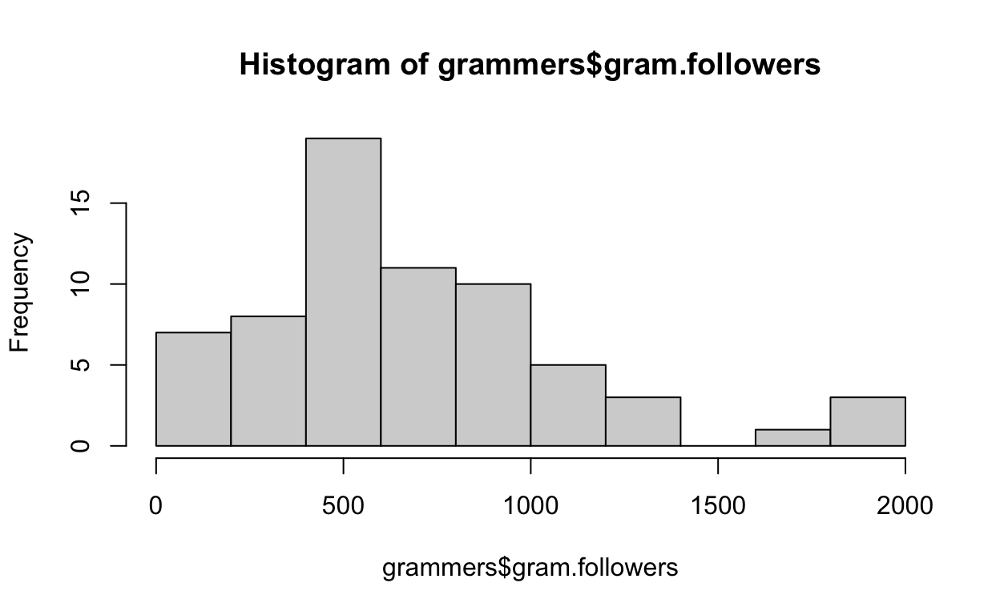
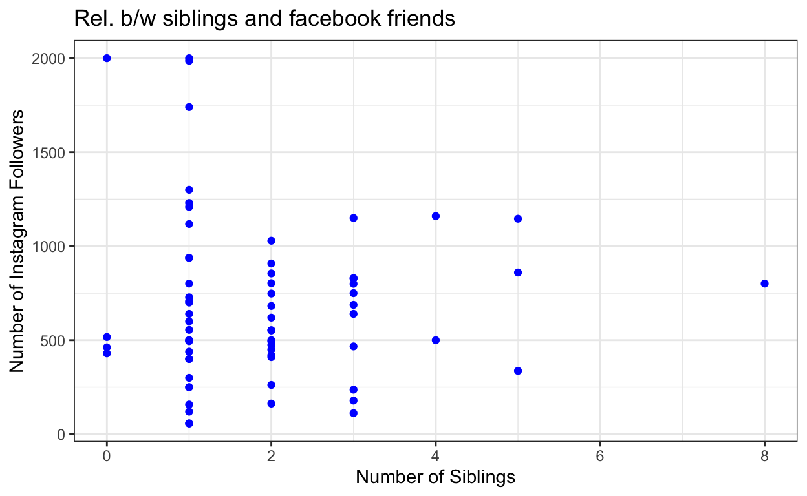
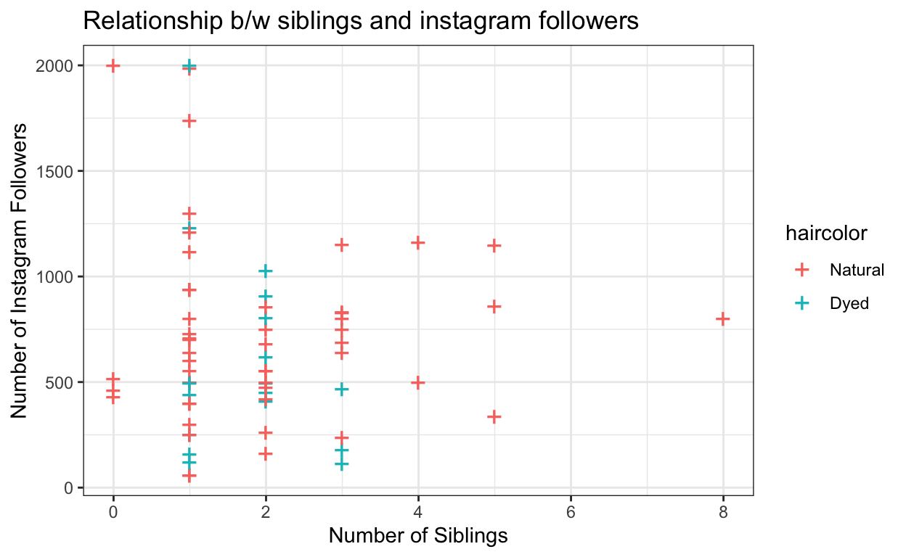

Completed exercises for the fifth lab
There is no tutorial for today’s lab; this document is the primary focus. Don’t forget to put your name between the quotation marks following the word author: above.
You may also want to refer to past labs. Don’t forget that previous labs are linked to on the main labs website.
Today, you’ll practice a number of the coding features from previous labs, while also practicing some of the initial concepts of the t-test. You’ll get to do a bit of filter()ing and (gg)plotting, and then see the difference between a z-test with a sample mean (and known population mean and variance) and a one-sample t-test with a sample mean (and known population mean, but unknown population variance).
You can find a completed version of these exercises at https://jdbest.github.io/psychRstats/answers.html
As you work through this document:
Run the following code chunk to load necessary packages for these exercises. If you haven’t yet loaded the tidyverse documents for your file, you should do so now.
Today you’ll be looking at the friends dataset again.
You downloaded this data a few weeks ago (in lab 03). Take some time and figure out how to load it below. This is something you should know how to do, and that we’ve done in the past few weeks; I’m intentionally leaving you to it rather than giving you the data again. Assign the friends data to a variable called friends <- using the assignment operator, <-. You’ll want to do one of the following to import the data. (These are not steps.)
read_csv() and write the relative (../etc.) or explicit path to the file. Don’t forget to use quotation marks for the file. You can copy the file path. Windows: Click “Copy Path” in the Home tab ribbon in file explorer. Mac: Right-click on the file, hold down the option key on your keyboard, and click ‘Copy “friends.csv” as Path name’.Note: if the code from (2) or (3) works, but it does not work from the code chunk, try adding two dots and a forward slash “../” at the very beginning of the quoted bit, e.g., read_csv("../03-exercise/friends.csv")
Note 2: if you get an error when you try to use read_csv(), it’s either that your path is wrong or that you didn’t load the packages, above. The former error would be, e.g., “could not find function read_csv”—go load the packages!
# uncomment the line below if the file friends.csv is in the same folder as this document,
# or edit it so that it correctly points to the right path for the friends.csv file
friends <- read_csv("../03-exercise/friends.csv")
names() of all of our data frame’s columns? (There are 32 of them!)names(friends)
[1] "duration" "finished" "whentook"
[4] "DistributionChannel" "socialmedia" "gender"
[7] "siblings" "smed.hrs" "gram.followers"
[10] "fbfriends" "tvhours" "haircolor"
[13] "belief.in.god" "liveoncampus" "numclasses"
[16] "numclassesremote" "eatmeat" "operas"
[19] "cigarettes" "like.science" "harrypotter"
[22] "registeredtovote" "votefor" "expectedoutcome_1"
[25] "expectedoutcome_2" "expectedoutcome_3" "expectedoutcome_4"
[28] "majordiv" "hrs.sleep" "height.unvalidated"
[31] "shootingdrills" "handedness" # all of these work to do this:
friends %>% select(3)
# A tibble: 84 x 1
whentook
<dttm>
1 2020-08-27 13:05:27
2 2020-08-27 14:58:31
3 2020-08-27 15:06:45
4 2020-08-27 15:26:38
5 2020-08-28 09:22:43
6 2020-08-28 11:24:18
7 2020-08-28 13:38:29
8 2020-08-28 22:13:56
9 2020-08-28 22:15:18
10 2020-08-28 22:17:37
# … with 74 more rowsfriends[,3]
# A tibble: 84 x 1
whentook
<dttm>
1 2020-08-27 13:05:27
2 2020-08-27 14:58:31
3 2020-08-27 15:06:45
4 2020-08-27 15:26:38
5 2020-08-28 09:22:43
6 2020-08-28 11:24:18
7 2020-08-28 13:38:29
8 2020-08-28 22:13:56
9 2020-08-28 22:15:18
10 2020-08-28 22:17:37
# … with 74 more rowsfriends$whentook
[1] "2020-08-27 13:05:27 UTC" "2020-08-27 14:58:31 UTC"
[3] "2020-08-27 15:06:45 UTC" "2020-08-27 15:26:38 UTC"
[5] "2020-08-28 09:22:43 UTC" "2020-08-28 11:24:18 UTC"
[7] "2020-08-28 13:38:29 UTC" "2020-08-28 22:13:56 UTC"
[9] "2020-08-28 22:15:18 UTC" "2020-08-28 22:17:37 UTC"
[11] "2020-08-29 11:17:51 UTC" "2020-08-29 20:01:56 UTC"
[13] "2020-08-29 20:04:11 UTC" "2020-08-29 20:05:41 UTC"
[15] "2020-08-30 14:32:09 UTC" "2020-08-30 14:57:50 UTC"
[17] "2020-08-30 19:54:52 UTC" "2020-08-30 20:22:43 UTC"
[19] "2020-08-30 20:24:22 UTC" "2020-08-30 20:30:28 UTC"
[21] "2020-08-30 21:22:41 UTC" "2020-08-31 10:16:08 UTC"
[23] "2020-08-31 10:21:27 UTC" "2020-08-31 10:27:37 UTC"
[25] "2020-08-31 13:28:24 UTC" "2020-08-31 15:00:07 UTC"
[27] "2020-08-31 15:19:18 UTC" "2020-08-31 15:21:41 UTC"
[29] "2020-08-31 16:49:36 UTC" "2020-08-31 17:24:31 UTC"
[31] "2020-08-31 18:09:26 UTC" "2020-08-31 18:23:30 UTC"
[33] "2020-08-31 18:25:29 UTC" "2020-08-31 18:38:16 UTC"
[35] "2020-08-31 18:39:04 UTC" "2020-08-31 18:39:05 UTC"
[37] "2020-08-31 19:20:32 UTC" "2020-08-31 20:45:53 UTC"
[39] "2020-08-31 20:46:03 UTC" "2020-08-31 21:31:27 UTC"
[41] "2020-08-31 21:35:49 UTC" "2020-08-31 21:51:19 UTC"
[43] "2020-08-31 21:56:39 UTC" "2020-08-31 22:08:12 UTC"
[45] "2020-08-31 22:08:24 UTC" "2020-08-31 22:45:01 UTC"
[47] "2020-08-31 23:00:03 UTC" "2020-08-31 23:23:15 UTC"
[49] "2020-08-31 23:35:31 UTC" "2020-08-31 23:54:52 UTC"
[51] "2020-09-01 00:02:30 UTC" "2020-09-01 02:15:56 UTC"
[53] "2020-09-01 08:30:40 UTC" "2020-09-01 08:35:47 UTC"
[55] "2020-09-01 11:17:48 UTC" "2020-09-01 11:27:09 UTC"
[57] "2020-09-01 11:28:17 UTC" "2020-09-01 11:50:18 UTC"
[59] "2020-09-01 11:50:52 UTC" "2020-09-01 12:01:28 UTC"
[61] "2020-09-01 12:41:23 UTC" "2020-09-01 12:43:50 UTC"
[63] "2020-09-01 13:12:15 UTC" "2020-09-01 14:33:10 UTC"
[65] "2020-09-01 15:03:39 UTC" "2020-09-01 15:37:33 UTC"
[67] "2020-09-01 18:55:16 UTC" "2020-09-01 21:30:04 UTC"
[69] "2020-09-01 22:14:42 UTC" "2020-09-01 23:34:27 UTC"
[71] "2020-09-02 10:44:29 UTC" "2020-09-02 10:44:53 UTC"
[73] "2020-09-02 11:50:56 UTC" "2020-09-02 12:49:41 UTC"
[75] "2020-09-02 13:39:25 UTC" "2020-09-02 14:01:39 UTC"
[77] "2020-09-02 14:18:38 UTC" "2020-09-02 14:35:14 UTC"
[79] "2020-09-02 17:14:31 UTC" "2020-09-02 17:20:38 UTC"
[81] "2020-09-02 17:55:04 UTC" "2020-09-02 17:58:51 UTC"
[83] "2020-09-02 21:15:58 UTC" "2020-09-06 20:48:51 UTC"friends %>% select(whentook)
# A tibble: 84 x 1
whentook
<dttm>
1 2020-08-27 13:05:27
2 2020-08-27 14:58:31
3 2020-08-27 15:06:45
4 2020-08-27 15:26:38
5 2020-08-28 09:22:43
6 2020-08-28 11:24:18
7 2020-08-28 13:38:29
8 2020-08-28 22:13:56
9 2020-08-28 22:15:18
10 2020-08-28 22:17:37
# … with 74 more rowsfilter() function to filter out people with only one sibling listed in the column called siblings (i.e., remove people who have only one sibling). (But people with zero siblings should be included.) Said another way: you want everyone with 0 siblings or more than one, but not one sibling.If you’re not sure how to say “not” in R: not is an exclamation point, as it is in many other programming languages. Thus, writing != is like saying “not equivalent”. If you’re wanting to instead use “or”, that’s the pipe, | – as we’ve used last lab. e.g., try running the code 2+2 == 4 | 2+2 == 5 in your console. While only the former is TRUE, the “or” pipe | says "well, one of these is true—and will read TRUE.
Note: I’ve seen a few people use <> in their writing. This is totally fine as a note for yourself, but does not mean “not” in R.
friends %>% filter(siblings != 1)
# A tibble: 49 x 32
duration finished whentook DistributionCha… socialmedia
<dbl> <dbl> <dttm> <chr> <dbl>
1 332 1 2020-08-27 14:58:31 anonymous 12
2 399 1 2020-08-27 15:06:45 anonymous 1
3 139 1 2020-08-28 13:38:29 anonymous 1
4 271 0 2020-08-28 22:15:18 anonymous 12
5 290 1 2020-08-29 20:01:56 anonymous 1
6 241 1 2020-08-29 20:05:41 anonymous 1
7 18 0 2020-08-30 19:54:52 anonymous 12
8 323 1 2020-08-30 20:22:43 anonymous 1
9 405 1 2020-08-30 20:24:22 anonymous 1
10 261 1 2020-08-30 20:30:28 anonymous 1
# … with 39 more rows, and 27 more variables: gender <chr>,
# siblings <dbl>, smed.hrs <dbl>, gram.followers <dbl>,
# fbfriends <dbl>, tvhours <dbl>, haircolor <dbl>,
# belief.in.god <dbl>, liveoncampus <dbl>, numclasses <dbl>,
# numclassesremote <dbl>, eatmeat <dbl>, operas <dbl>,
# cigarettes <dbl>, like.science <dbl>, harrypotter <dbl>,
# registeredtovote <dbl>, votefor <dbl>, expectedoutcome_1 <dbl>,
# expectedoutcome_2 <dbl>, expectedoutcome_3 <dbl>,
# expectedoutcome_4 <dbl>, majordiv <dbl>, hrs.sleep <dbl>,
# height.unvalidated <dbl>, shootingdrills <dbl>, handedness <dbl># or
friends %>% filter(siblings < 1 | siblings > 1) # remember the | means OR
# A tibble: 49 x 32
duration finished whentook DistributionCha… socialmedia
<dbl> <dbl> <dttm> <chr> <dbl>
1 332 1 2020-08-27 14:58:31 anonymous 12
2 399 1 2020-08-27 15:06:45 anonymous 1
3 139 1 2020-08-28 13:38:29 anonymous 1
4 271 0 2020-08-28 22:15:18 anonymous 12
5 290 1 2020-08-29 20:01:56 anonymous 1
6 241 1 2020-08-29 20:05:41 anonymous 1
7 18 0 2020-08-30 19:54:52 anonymous 12
8 323 1 2020-08-30 20:22:43 anonymous 1
9 405 1 2020-08-30 20:24:22 anonymous 1
10 261 1 2020-08-30 20:30:28 anonymous 1
# … with 39 more rows, and 27 more variables: gender <chr>,
# siblings <dbl>, smed.hrs <dbl>, gram.followers <dbl>,
# fbfriends <dbl>, tvhours <dbl>, haircolor <dbl>,
# belief.in.god <dbl>, liveoncampus <dbl>, numclasses <dbl>,
# numclassesremote <dbl>, eatmeat <dbl>, operas <dbl>,
# cigarettes <dbl>, like.science <dbl>, harrypotter <dbl>,
# registeredtovote <dbl>, votefor <dbl>, expectedoutcome_1 <dbl>,
# expectedoutcome_2 <dbl>, expectedoutcome_3 <dbl>,
# expectedoutcome_4 <dbl>, majordiv <dbl>, hrs.sleep <dbl>,
# height.unvalidated <dbl>, shootingdrills <dbl>, handedness <dbl>filter() function to show only people who have an NA (meaning that they did not respond) for the sibling question. Use the is.na() function to test whether answers to that question (in column siblings) are NA. Put the column name in the parentheses *inside the filter() parentheses: filter(is.na(VARIABLENAME)). Don’t forget to “chain” it onto the friends data frame.# A tibble: 1 x 32
duration finished whentook DistributionCha… socialmedia
<dbl> <dbl> <dttm> <chr> <dbl>
1 37 0 2020-08-28 09:22:43 anonymous NA
# … with 27 more variables: gender <chr>, siblings <dbl>,
# smed.hrs <dbl>, gram.followers <dbl>, fbfriends <dbl>,
# tvhours <dbl>, haircolor <dbl>, belief.in.god <dbl>,
# liveoncampus <dbl>, numclasses <dbl>, numclassesremote <dbl>,
# eatmeat <dbl>, operas <dbl>, cigarettes <dbl>,
# like.science <dbl>, harrypotter <dbl>, registeredtovote <dbl>,
# votefor <dbl>, expectedoutcome_1 <dbl>, expectedoutcome_2 <dbl>,
# expectedoutcome_3 <dbl>, expectedoutcome_4 <dbl>, majordiv <dbl>,
# hrs.sleep <dbl>, height.unvalidated <dbl>, shootingdrills <dbl>,
# handedness <dbl>w which is assigned to 5 values that you make up, combined with c(). Then find the mean and standard deviation of the values, using that variable.data.frame() function here!). Assign it to everyone who does not have an NA for the gram.followers column. When you want to say not NA, since you’re using a function (you remember, this was two questions ago: is.na()), you put the not operator (!) in front of the function: e.g., ! is.na(VARIABLENAME).Trying to say this a different way: make a new variable, named whatever you like, which is assigned with the <- operator to the value of friends, and then chain on a filter() selecting only people who do NOT have NA for the gram.followers column. You will be using this NEW data-frame (without NAs in that column) for the rest of the lab.
Done correctly, you should have 67 rows, as you’ll see in the Environment pane. (17 people either don’t use instagram or didn’t tell us their number of followers.)
ggplot() + geom_histogram() and, also, separately hist() to create histograms of the gram.followers data from the data frame you created in the last question. Remember that in a histogram, you only define the x (not the y). In the ggplot2 version, set your binwidth to something that makes sense to you (what is an appropriate number between bins?) or set the number of bins you want to see; in the hist() version, set your breaks equal to how many bins you want to see. No worries about labeling your axes.ggplot(grammers, aes(x = gram.followers)) +
geom_histogram(binwidth = 100) +
theme_classic()
ggplot(grammers, aes(x = gram.followers)) +
geom_histogram(bins = 10) +
theme_classic()
hist(grammers$gram.followers, breaks = 10)

gram.followers column from your data frame: mean(), median(), sd(), range (min() and max() or, if you prefer, max()-min()). Use your new data frame without NAs. You don’t need to write the answers anywhere. Just your code. When you knit the document, they’ll all print (you don’t need to save them to new variables yet).mean(grammers$gram.followers)
[1] 685.6269sd(grammers$gram.followers)
[1] 439.0476median(grammers$gram.followers)
[1] 600[1] 57 2000# and there actually is a function called range which does just that:
range(grammers$gram.followers)
[1] 57 2000# You can also do this with a `dplyr` function called `summarize()`---the benefit
# being that you don't have to re-write the name of the data frame each time---
# and that it's all in one place:
grammers %>%
summarize(mean = mean(gram.followers),
sd = sd(gram.followers),
median = median(gram.followers),
range = max(gram.followers) - min(gram.followers))
# A tibble: 1 x 4
mean sd median range
<dbl> <dbl> <dbl> <dbl>
1 686. 439. 600 1943ggplot2 to create a ggplot() which adds on a geom_point() layer to plot gram.followers on the y-axis and siblings on the x-axis. This probably won’t mean a ton, but that’s okay. Be sure to label your x and y axes with full names and give the plot a meaningful title with the labs() added on. Consider adding a theme. Also consider adding some color: can you make the points blue?ggplot(grammers, aes(x = siblings, y = gram.followers)) +
geom_point(color = "blue") +
theme_bw() +
labs(x = "Number of Siblings", y = "Number of Instagram Followers",
title = "Rel. b/w siblings and facebook friends")

haircolor to be the answers to the question “Is your current hair color your natural hair color?”Please note: only run this once! If you run it a second time, it will turn the whole haircolor column to NAs. Want to check what it looks like? Just highlight the part after the assignment <- operator and run that in the console.
Copy the code for the plot from Q9 in the code chunk labeled ex10 below. If you added blue points, delete the color = "blue" in the parentheses of geom_point(). Into the parentheses of the aes() mapping in the ggplot() call at the beginning of the code chunk below, set color = equal to the hair color variable (haircolor)—careful: neither gets quotation marks! Then, inside the geom_point() command’s parentheses, set shape = "+" and (with a comma after the closing quotation mark in “+”) set size = 5. You’re changing the points to + signs and making them larger.
ggplot(grammers, aes(x = siblings, y = gram.followers, color = haircolor)) +
geom_point(shape = "+", size = 5) +
theme_bw() +
labs(x = "Number of Siblings", y = "Number of Instagram Followers",
title = "Relationship b/w siblings and instagram followers")

Suppose we are interested in whether our sample has, on average, the same number of instagram followers as people in general. We could say our research hypothesis is that our sample has a different mean number of followers, but the null hypothesis is that it does. (Step 1!)
You might say then that:
\[H_0: \mu_{our~data}=\mu_{people~in~general}\]
\[H_1: \mu_{our~data}\neq{}\mu_{people~in~general}\]
Now, how do we define people in general? This is pretty tricky in most cases—which is why, quite soon, we’re going to stop using a z-test at all. However, we can make something up—suppose that the average number of followers is 500. (I tried to find a real number online, and failed. Think you have a better estimate? Feel free to use yours instead.) There are a lot of accounts with very few followers, and a lot with thousands (and some with millions), but imagine that it averages out to 500. Is our sample different from that figure? To figure this out, to start, let’s also imagine that the standard deviation for the population distribution is 300. Again, that’s unlikely! But we’re going to roll with it for today.
gram.followers to a new variable called follow.mean. Remember, we’re still using the new data-frame you created in #6.follow.mean <- mean(grammers$gram.followers)
We don’t need to calculate the standard deviation—we’ve got it (even though it’s fake). Assign the number I gave you for the population standard deviation (300) as the variablefollow.sd.
follow.sd <- 300
To get the actual standard deviation of the comparison distribution, we want the sampling distribution of the mean, which has a standard deviation equal to the standard error of the mean—that’s \(SEM=\frac{SD}{\sqrt{n}}\) and we already know SD (you just saved it in a variable!). That’s easy to calculate in R. Many of you did it the other day! Just use the sqrt() function to find square roots, and use the good old-fashioned [forward] slash / for dividing. Go ahead: assign the SEM to a variable called follow.sem.
(Note: You can find the n by just looking at the length of the data frame—it’s actually the number of rows I told you way back in Q6. But if you’d like to use an R function for it, there’s nrow() which you can run on the data frame: nrow(DATA) will give you how many rows there are in your data frame if you replace DATA with its name—in this case, one per person.)
So, we can define our comparison distribution as follows: it is a z-distribution based on the sampling distribution of the mean, which has a mean of 685.63 and a standard deviation equal to the standard error of the mean, 36.65.
No changes yet! Still using the same cut-offs from last lab, with a significance level of \(p < .05\). We’ll continue with qnorm() for this, which is the quantiles (i.e., you’re passing it the percentile and it’s giving you what number falls there) of the normal distribution.
follow.z and then print it out by re-writing the name on its own line. Remember: we’re using our sample mean that you just calculated, our sample’s SEM that you calculated (as an estimate of the sampling distribution’s standard deviation), and the number 500 as our fake population mean for the comparison distribution. When you divide, don’t forget to use parentheses for the numerator (on top).\[z=\frac{\mu_{sample}-\mu_{population}}{SEM}\]
follow.z <- (follow.mean - 500) / follow.sem
follow.z
[1] 5.064738Okay, our z-score here is 5.06.
follow.z and abs(follow.z)), and run the code chunk to confirm that. It should read TRUE, twice.What are we doing here? We’re testing: does the sample mean for our sample differ from the (fake) population mean and SD that I gave you?
# check if follow.z is more than 1.96 OR less than -1.96;
# if it is either (it can't be both), return TRUE
follow.z > 1.96 | follow.z < -1.96
[1] TRUE# alternatively, use the abs() function to check if the MAGNITUDE of z
# is more than 1.96
abs(follow.z) > 1.96
[1] TRUEIt does!
What percentile is it? Again, uncomment to see. Here, we’re using the pnorm() function we used last week, which is the reverse of qnorm(). Where qnorm() takes a percentile and gives a z-score, pnorm() takes a z-score and gives a percentile. (No, really—try running it on -1.96 and you’ll get just about .05, and on 1.96 where you’ll get just about .975.)
pnorm(follow.z)
[1] 0.9999998You should get a .999999. What does that mean? It means that this score is so high that it must not come from the same distribution. It’s saying that the score’s from the 99.99999th percentile.
… it also probably means that the fake population mean and SD are wrong, huh? Yeah, I think that fake population SD was off, even if the mean isn’t.
Now we’ll try to do this whole thing with a slight difference: looking at the most basic kind of t-score. As we will (or have) discuss[ed] in class, a t-test has one primary difference from the basic z-test: rather than assuming that we know the population’s standard deviation, we instead accept that we do not. All we know in this instance is the population mean. (We’re still using the fake population mean of 500—we’re just no longer using a fake population standard deviation!)
What do we need to do to find an estimate of the population standard deviation? The following things, none of which are actually knew.
df <- n-1; mathematically,\[df = n - 1\]
SS <- sum((x-mean(x))^2);\[SS = \sum{(X-M)^2}\]
sd.est <- sd(x) or, if you’re doing it by hand, sd.est <- sqrt(SS/df) (using the two variables we’ve defined above!);\[S=\sqrt{\frac{\sum{(X-M)^2}}{n-1}}=\sqrt{\frac{SS}{df}}\]
t.sd <- sd.est/sqrt(n);\[S_M=\frac{S}{\sqrt{n}}\]
This is identical to the way we wrote them before. To recap:
\[H_0: \mu_{our~data}=\mu_{people~in~general}\]
\[H_1: \mu_{our~data}\neq{}\mu_{people~in~general}\]
I’ll walk you through this with dummy code (code that doesn’t work because it has stand-ins for your variables); you replace the dummy code with the variable names from our data. Replace the text that says DATA with the name of your data frame—still using the one we created that doesn’t have NAs. Replace the text that says COLUMN with the name of the column of interest (gram.followers, still). You should also uncomment the lines, of course, if you want them to run—remove the # marks.
# n <- nrow(DATA)
# df <- n - 1
# SS <- sum((DATA$COLUMN - mean(DATA$COLUMN))^2)
# sd.estimate <- sqrt(SS / df)
# s.m <- sd.estimate / sqrt(n)
#
# # now, run the straightforward check:
# sd.estimate2 <- sd(DATA$COLUMN)
# s.m2 <- sd.estimate2 / sqrt(n)
#
# # and are these equal?: these should both read TRUE
# identical(s.m, s.m2)
n <- nrow(grammers)
df <- n - 1
SS <- sum((grammers$gram.followers - mean(grammers$gram.followers))^2)
sd.estimate <- sqrt(SS / df)
s.m <- sd.estimate / sqrt(n)
# now, run the straightforward check:
sd.estimate2 <- sd(grammers$gram.followers)
s.m2 <- sd.estimate2 / sqrt(n)
# and are these equal? use the identical() function to test that thing: these should both read TRUE
identical(sd.estimate, sd.estimate2)
[1] TRUEidentical(s.m, s.m2)
[1] TRUETake time and make you understand what is happening at every step—can you imagine what’s happening if you were writing the equations out on paper instead of in R code? Any questions? Ask your classmates in your breakout room. If they don’t know, ask a course assistant or the professor.
We have now defined our comparison distribution!
It’s the t-distribution with df of 66, a mean of 500, and a standard deviation (the standard error of the mean) of 53.64.
We’ll use t-tables in class like with the z-table, but in R we can do this much more easily. Remember the qnorm() function we used above? As we discussed, the “norm” bit was referring to the normal distribution. The q piece in the name meant “quantile.” Well, we can get the quantiles of the t distribution the same way: with qt(). The only difference is that we need to specify the degrees of freedom, which we defined above in Q14.
I’m going to write it below—you run the code. It should look almost identical to the qnorm() function above. But it will result in different cut-off values, because it’s no longer using the normal distribution. They are quite similar, though, right?
qt() code working, copy it below, and assign it to a new variable called cutoff. (It should have two values: the upper and lower values.)Okay, now we can calculate t. It looks quite similar to z, with the exception (again) that the only thing we’re claiming to “know” at this point is the population mean—the \(S_M\) is coming from our estimate of the population standard deviation:
\[t=\frac{M-\mu_M}{S_M}\]
t.stat which is assigned <- to the value of t—in parentheses, subtract the fake population mean (500) from your mean number of followers (which you created way above in Q11 and named follow.mean, if you did as I suggested), and then divide that result by the s.m we saved in Q14—the standard error of the mean. Then just write the name (t.stat) on its own line so it prints. Don’t forget to use parentheses for the numerator (the subtraction) so it happens first.t.stat <- (follow.mean - 500) / s.m
t.stat
[1] 3.460721Okay, so we can say that $t=$3.4607211.
Is t.stat more extreme than the critical value?
t.stat to the cutoff variable. You should also print them both and take a look—your eye may be better at deciding than code. If you saved both the lower and upper cutoffs (i.e., one negative and one positive), then it seems likely that you may want to either compare absolute values or use the subsetting square brackets, e.g., cutoff[1] and cutoff[2] for your comparison.t.stat
[1] 3.460721cutoff
[1] -1.996564 1.996564[1] TRUE TRUE# the most complete: is it lower than the low cutoff or higher than the high?
t.stat < cutoff[1] | t.stat > cutoff[2]
[1] TRUEYes, definitely! Our t is larger than the cut-off, so it is statistically significant and p < .05.
Okay, one last thing: we can also calculate the exact p-value here using the pt() function.
This is essentially the same as pnorm(), which we used to find the percentile of the normal distribution. Here, we want the percentile of how rare this score is, but in the t distribution. As with the qt() function, we need to give a df (the degrees of freedom). You defined that above, so un-comment these lines and run them.
Note: What does lower.tail mean? Well, the first one is defining the probability that the true (population) mean is more than the value of your t-score; the second is the probability that the true (population) mean is less than the value of your t-score. Then we add them together to get the whole thing. The lower tail is looking all the way at the left—the extreme negative values. And the upper tail is looking all the way at the right—the extreme positive values. We use both of them to get a p-value because we’re using a two-tailed test.
upper.tail <- pt(t.stat, df = df, lower.tail = FALSE)
lower.tail <- pt(-t.stat, df = df, lower.tail = TRUE)
(p.value <- upper.tail + lower.tail)
[1] 0.000949337So does your conclusion from #18 make sense? Remember: the comparison we make here is between the cut-off t-value and the actual t-value for our sample. The p-value tells us in a glance whether that t is larger than the cut-off, but the comparison is about the t-value.
Yes, it does! The p-value is definitely smaller than .05, which makes sense, given that our t is larger than the cut-off.
t.test()—the one function for today. For the one-sample t-test, you give the t.test() function two arguments: your x-values (here, DATA$gram.followers where DATA is your data frame), and your population mean (mu), which is here 500. Because this is not a dplyr function, you do need to explicitly name the data frame as well as the column, with the $ separating them. Uncomment the code below and replace the all caps with your variables / values.# t.test(x = DATA$COLUMN, mu = POPULATIONMEAN)
t.test(x = grammers$gram.followers, mu = 500)
One Sample t-test
data: grammers$gram.followers
t = 3.4607, df = 66, p-value = 0.0009493
alternative hypothesis: true mean is not equal to 500
95 percent confidence interval:
578.5347 792.7190
sample estimates:
mean of x
685.6269 Yes, they are identical. The confidence interval is an estimate of the true mean.
Okay, that’s it! Go ahead and save, then knit the document.
For attribution, please cite this work as
Dainer-Best (2020, Oct. 2). psychRstats: Learning Statistics for Psychology in R: Refreshing and Reviewing (Lab 05) Exercises, Completed. Retrieved from https://jdbest.github.io/psychRstats/answers/05-lab/
BibTeX citation
@misc{dainer-best2020refreshing,
author = {Dainer-Best, Justin},
title = {psychRstats: Learning Statistics for Psychology in R: Refreshing and Reviewing (Lab 05) Exercises, Completed},
url = {https://jdbest.github.io/psychRstats/answers/05-lab/},
year = {2020}
}